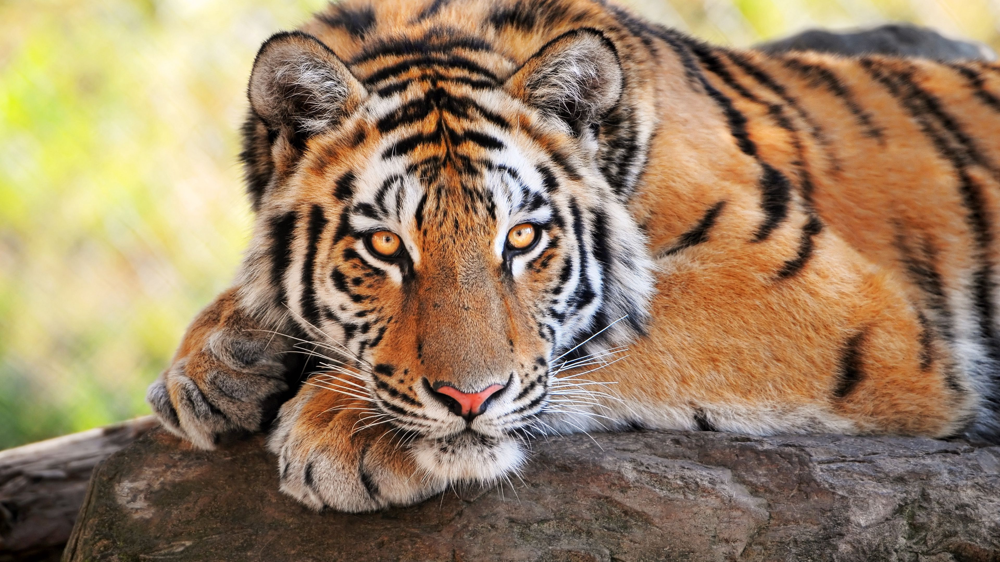
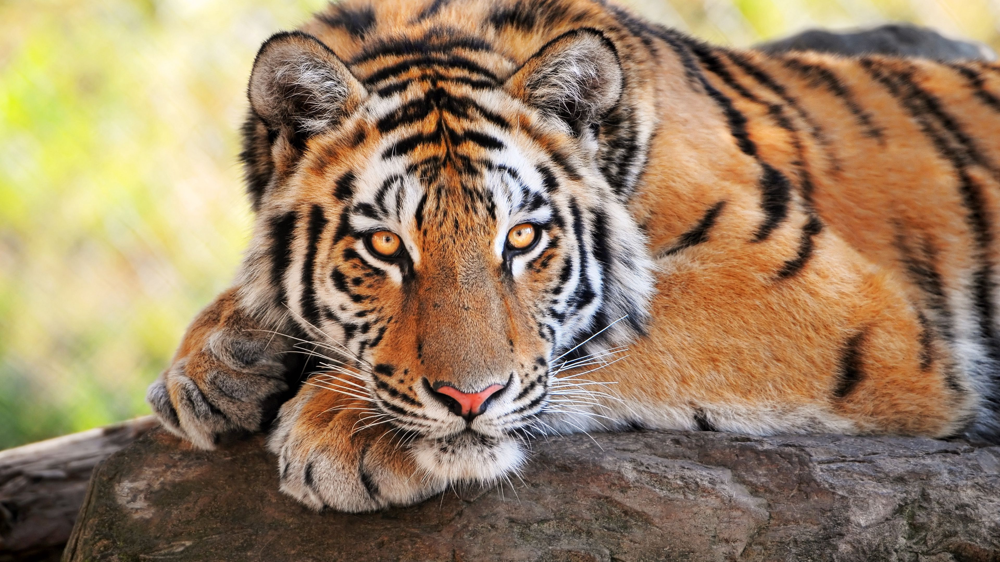
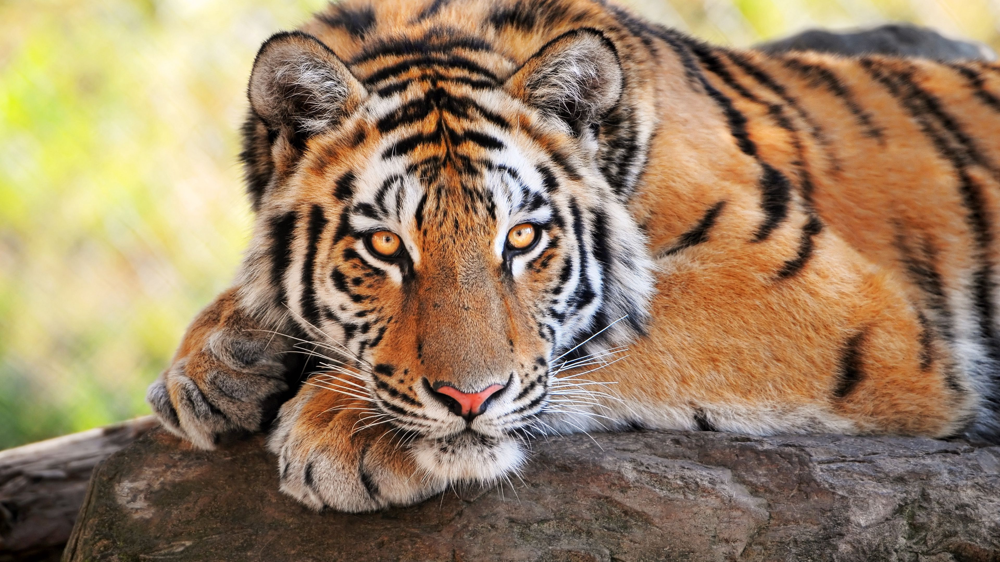

Mansinghdeo - 202203103510231
SCROLL DOWN TO
VIEW DETAILS
VIEW DETAILS
Mansinghdeo Wildlife Sanctuarylies in Pench Tiger Reserve area, laying in Maharashtra state of Central India.

Mansingh Deo wildlife sanctuary lies in Pench Tiger Reserve area, laying in Maharashtra state of Central India. It is just adjoining to state border of Madhya Pradesh. As we all know that Pench tiger reserve area is spread over both the states thus geographically it is same region but politically, it is part of Maharashtra state. Mansingh Deo Wildlife Sanctuary was declared on 02/Nov/2010 but Forest Department of Maharashtra state. But despite of its notification, it was not immediately opened for tourists to explore this forest. This forest is laying in Deolapar range. It was opened for tourists from March-2014 with naming its entrance gate as Khursapar gate. Due to excess tourism pressure on Touria entrance gate of Pench Madhya Pradesh, tourists often doesn't gets safari permits and thus it was affecting overall tourism of Pench national park. Introduction of Khursapar gate was great relief for wildlife lovers. Within one year of its opening, it becomes popular in tourism world with the name of Khursapar zone. It is hardly 12 kms from Touria gate resorts, thus easy to visit. Here tiger sighting result was also good thus it is worth to visit this sanctuary, during Pench tour.
Tigers As per the 2010-11 tiger estimation report, there are 24 tigers in the Pench and Bor landscape.[5] The Wildlife Institute of India (WII) estimated the presence of 12 tigers in and around the sanctuary but the number has increased to 15, with three new cubs sighted in March 2011. A tigress with two-month-old cubs; one male and two females, was first sighted by the field staff in the sanctuary's core zone. The annual births of new tiger cubs shows that the Bor is a breeding ground for tigers, with cubs born here each of the past four years.[when?] In 2008, a tigress had three cubs, then one more tigress had two cubs in 2009, followed by another tigress with one cub in 2010 and three cubs in 2011. The field director of Pench Tiger Reserve said the 2011 births seem to be the first litter of this tigress. "Better protection, good prey base and availability of water are three key factors why Bor is becoming a safe haven for tigers."